5.2 Transition Metals - Complexes · Topic 17
Complex ions, ligands, colour, shapes and biological complexes
5.2 Transition Metals - Complexes · Topic 17
本页对应 5.2 Transition Metals - Complexes.pdf.pdf，范围为 Pearson Edexcel International Advanced Level Chemistry specification 的 Topic 17: Transition Metals and their Chemistry（17.1–17.17, 17.25）。解释采用中文，专业词汇保留 English，便于和 Data Booklet、complex-ion diagrams 及 exam wording 对照。
Learning objectives
学完本页后，你应该能够：
- define transition metals and write Period 4 d-block electronic configurations；
- explain variable oxidation numbers、ligands、dative covalent bonding、coordination number 和 complex ions；
- explain colour using d-orbital splitting，并预测 ligand / oxidation number / geometry changes 的 colour effects；
- describe monodentate、bidentate、hexadentate ligands，complex shapes、cis-trans / optical isomerism 和 haemoglobin；
- explain the chelate effect、ligand stability 和 entropy changes in complex formation。
17.1-17.3 Transition metals and electronic configurations
Definition of a transition metal
d-block element 是 periodic table 中 filling d-subshell 的 element；transition metal 必须能形成至少一个 stable ion，且该 ion 有 incompletely filled d-subshell。
- Sc 是 d-block element，但
Sc3+为3d0，不是 transition metal； - Zn 是 d-block element，但
Zn2+为3d10，不是 transition metal； - first transition series 通常指 Ti 到 Cu。
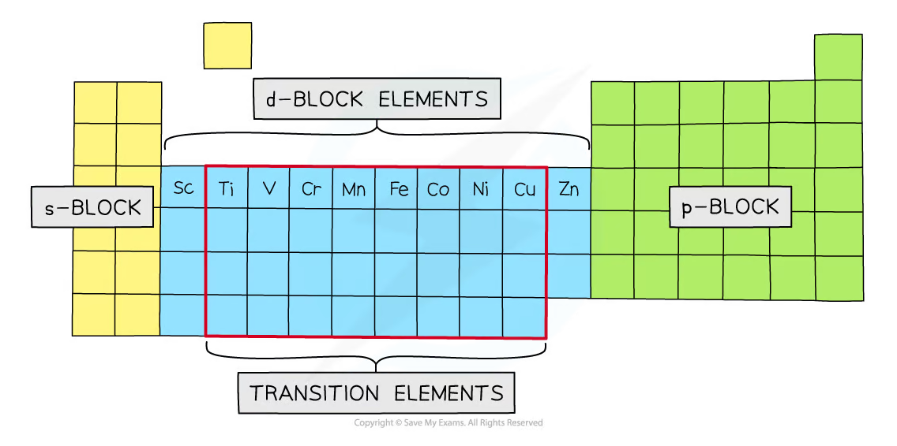
Period 4 electronic configurations
| Element | Configuration |
|---|---|
| Ti | [Ar]3d2 4s2 |
| V | [Ar]3d3 4s2 |
| Cr | [Ar]3d5 4s1 |
| Mn | [Ar]3d5 4s2 |
| Fe | [Ar]3d6 4s2 |
| Co | [Ar]3d7 4s2 |
| Ni | [Ar]3d8 4s2 |
| Cu | [Ar]3d10 4s1 |
Cr 和 Cu 是 exceptions。形成 ions 时先 remove 4s electrons，再 remove 3d electrons，例如 Mn3+ 为 [Ar]3d4。
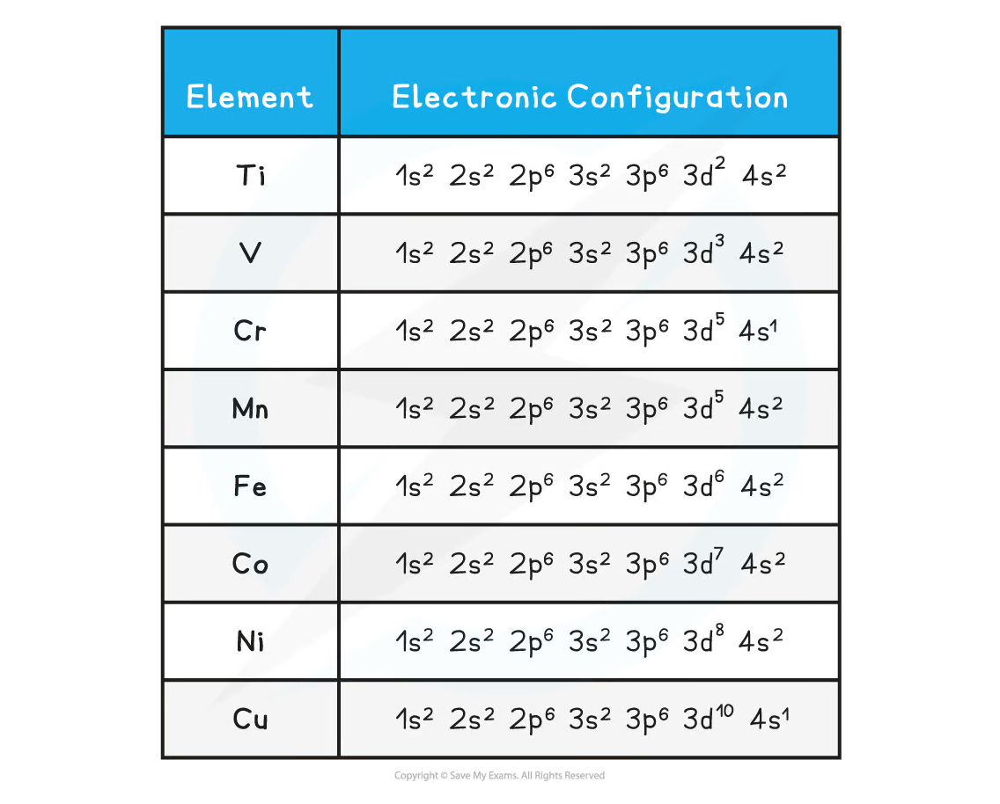
Variable oxidation numbers
Transition metals 能形成 variable oxidation numbers，因为 4s 和 3d energy levels 接近。形成 ions 时先失去 4s electrons，因此 +2 是许多 transition metals 的 common oxidation state。
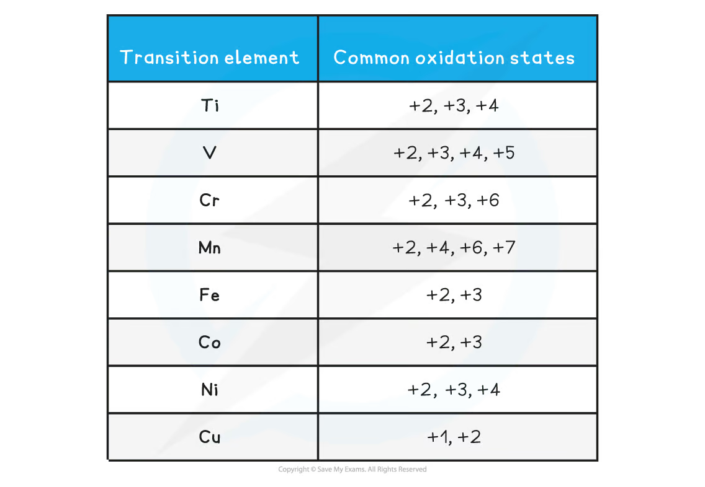
17.4-17.6 Complex ions and ligands
Ligands and dative covalent bonds
Ligand 能向 central metal ion donate a lone pair，形成 dative covalent / coordinate bond。Coordination number 是 central metal 与 ligand 形成的 coordinate bonds 数目，不是 ligand molecules 的数目。
例如 [Cu(H2O)6]2+ 有 six monodentate water ligands，coordination number = 6。
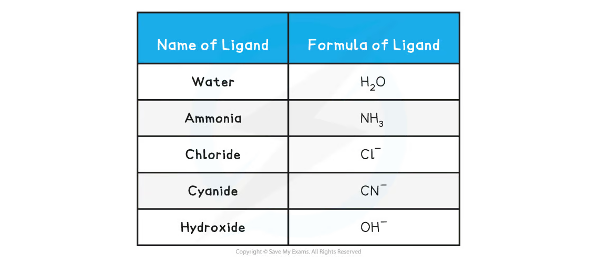
Writing and naming complexes
常见 monodentate ligands：H2O、NH3、Cl-、OH- 和 CN-。Naming complexes 时使用 ligand prefix + ligand name + metal name + oxidation state；anionic copper complex 使用 cuprate。注意 ammonia ligand 写作 ammine（double m）。
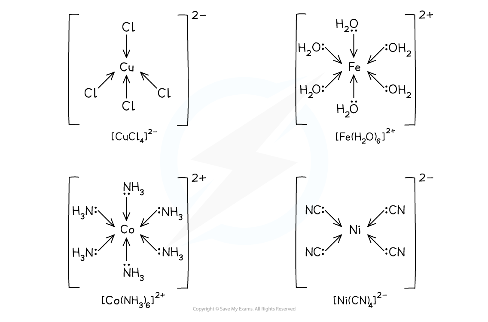

17.7-17.11 Colour in transition-metal complexes
Free transition-metal ion 的 five d-orbitals energy 相同；ligands approach 后，d-orbitals split into sets with different energies。Electron 吸收 energy ΔE，发生 d-d transition：
\[ \Delta E=h\nu=\frac{hc}{\lambda} \]
观察到的是 absorbed colour 的 complementary colour。没有 d-d transition 的 d0 ions（例如 Sc3+）和 d10 ions（例如 Zn2+）通常 colourless。
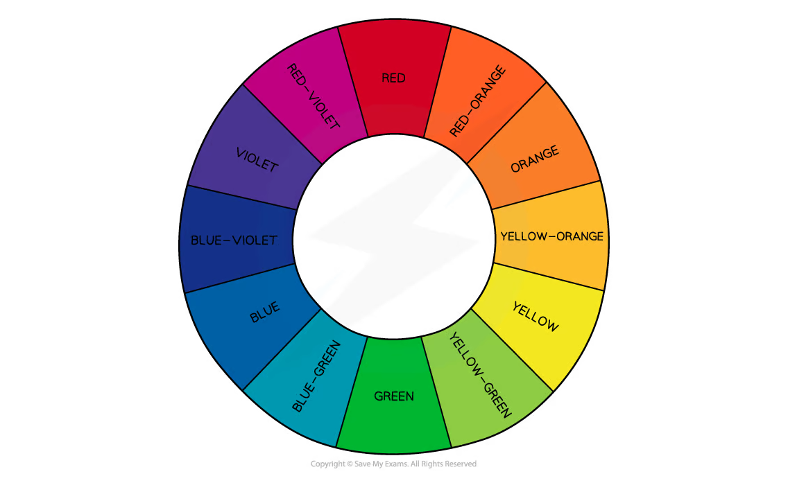
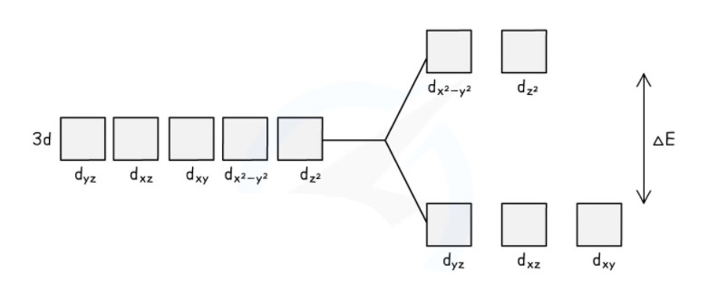
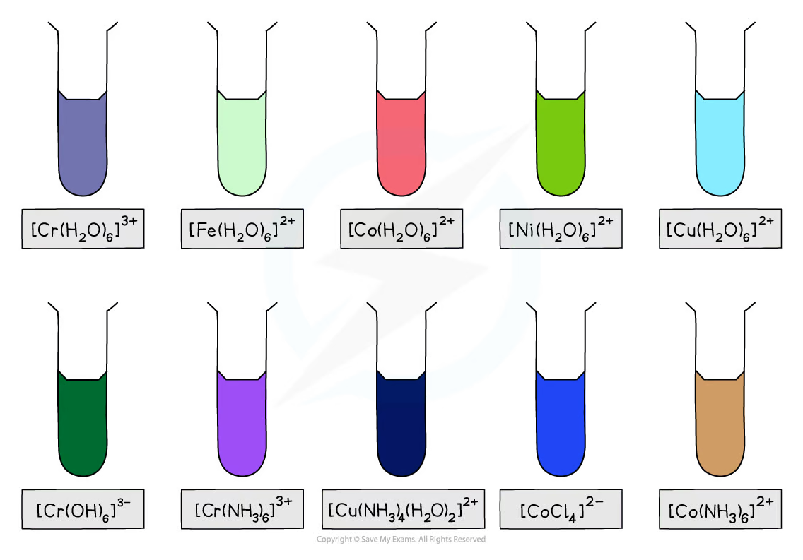
不同 ligand、oxidation number、coordination number 和 geometry 会改变 ΔE，所以同一种 metal 的 complexes 可能有不同 colours。
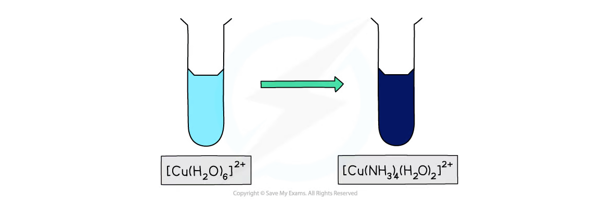
17.12-17.17 Ligands, shapes and biological complexes
Monodentate, bidentate and hexadentate ligands
- Monodentate ligand：形成 one dative bond，例如
H2O、NH3、Cl-； - Bidentate ligand：形成 two dative bonds，例如 1,2-diaminoethane（en）和 ethanedioate（ox）；
- Hexadentate ligand：形成 six dative bonds，例如
EDTA4-。
Bidentate / multidentate ligands 可以 wrap around metal ion，形成 chelate rings。
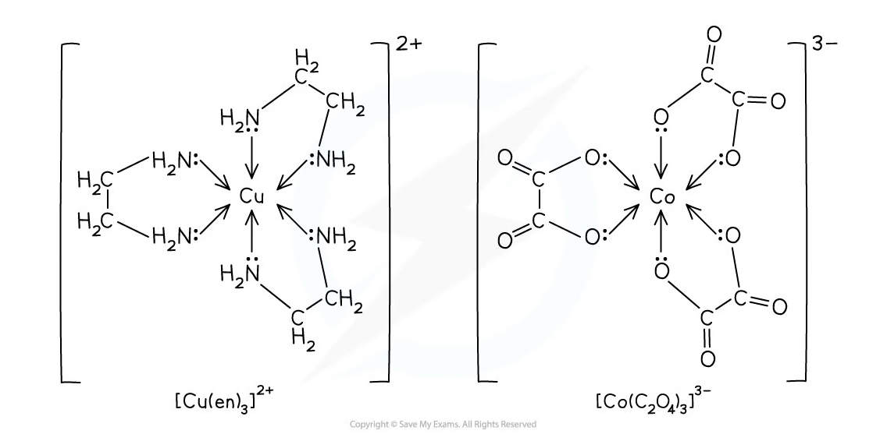


Complex shapes and coordination number
Octahedral：coordination number 6，bond angles 90°；tetrahedral：coordination number 4，bond angles 109.5°；square planar：coordination number 4，bond angles 90°。
Six coordinate bonds 可以来自 six monodentate ligands、three bidentate ligands，或 one hexadentate ligand。

Geometrical and optical isomerism
Cis 表示 identical ligands adjacent；trans 表示 identical ligands opposite。Octahedral complexes with bidentate ligands 可能有 optical isomers，它们是 non-superimposable mirror images。
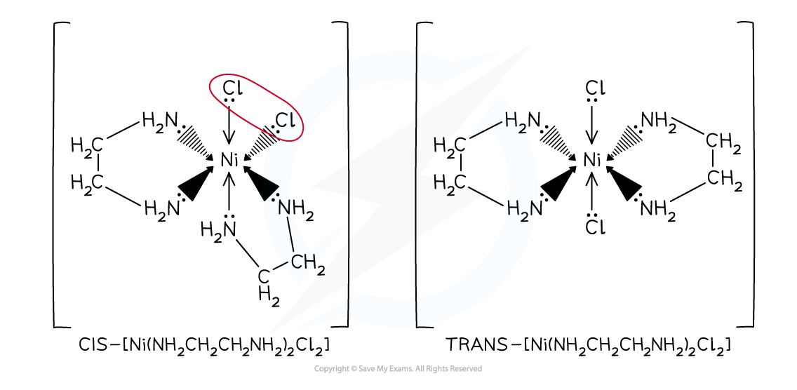
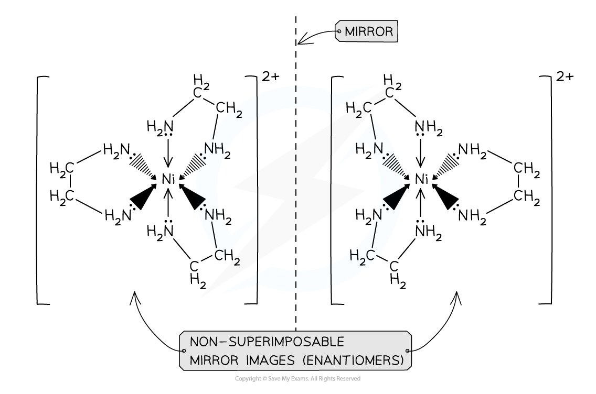
Cisplatin and haemoglobin
cis-[Pt(NH3)2Cl2] 是 square planar cisplatin。进入 cancer cell 后，chloride ligands 可被 water ligand exchange，随后 Pt complex 与 DNA bases coordinate，distort DNA structure，阻止 replication。
Haemoglobin 是含有 iron(II) 的 biological complex。Carbon monoxide 是 stronger ligand than oxygen，会 preferentially bind Fe(II)，形成 carboxyhaemoglobin，阻止 oxygen transport。
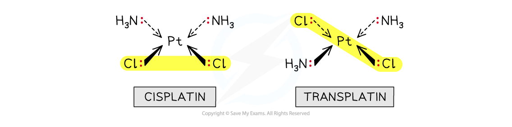
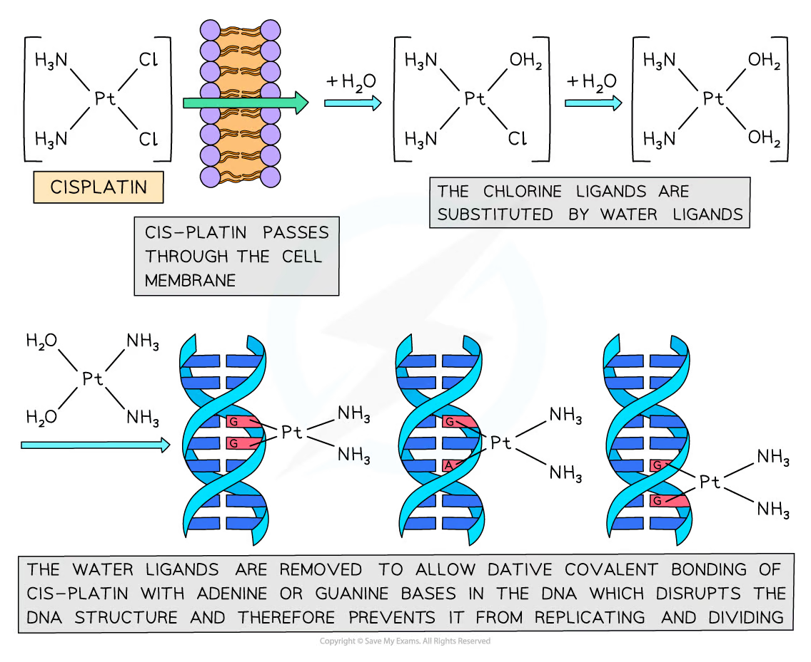
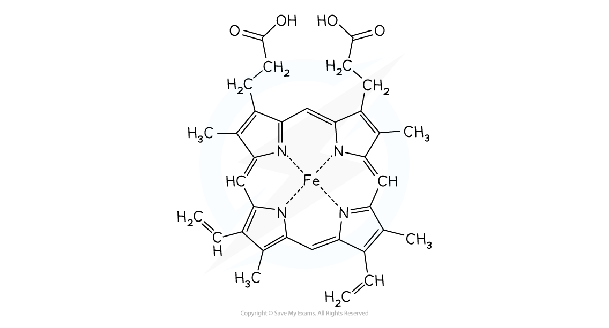

17.25 Chelate effect and complex stability
Replacing monodentate ligands with bidentate / hexadentate ligands creates a more stable complex，称为 chelate effect。例如：
\[ \ce{[Co(H2O)6]^{2+} + EDTA^{4-} -> [CoEDTA]^{2-} + 6H2O} \]
Solution 中 particle number 增加，通常使 ΔS_system positive；当 ΔH 不大时，positive entropy contribution 可使 ΔG 更 negative，complex 更 stable。
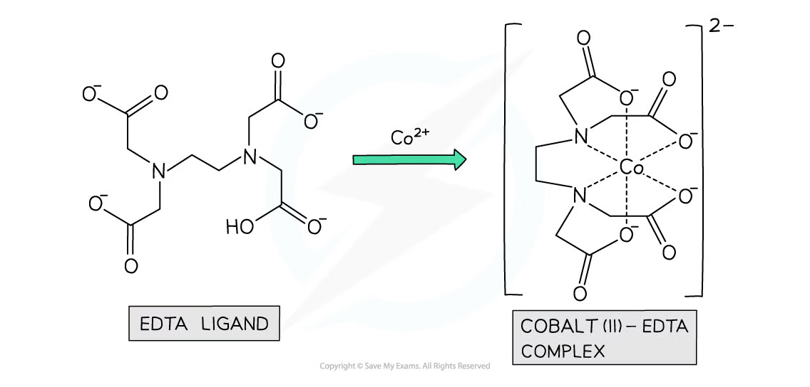
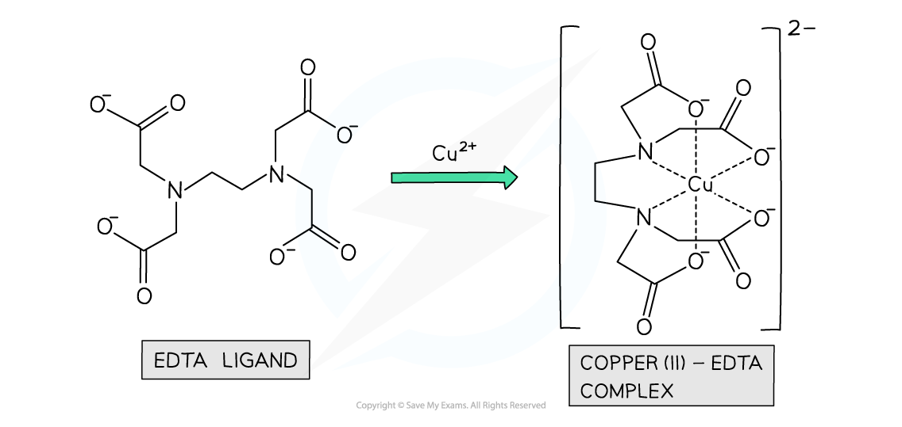
Exam checklist
Source note
本页面对应：Note per Chapter/Note per Chapter/5.2 Transition Metals - Complexes.pdf.pdf；考纲范围对应 International-A-Level-Chemistry-Spec 的 Topic 17: Transition Metals and their Chemistry。页面中的示意图均从该 note 的 PDF 内嵌图像独立提取并保存到 assets/notes/transition-metals/。